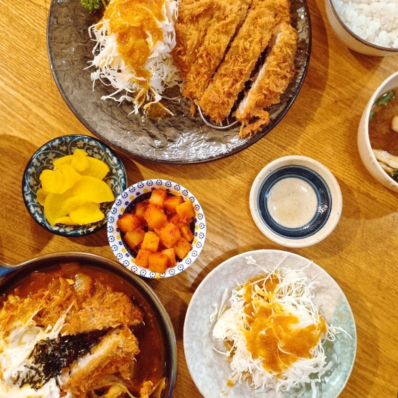

맛집 소개
개맛도리 맛집탐방은 전국의 다양한 맛집을 소개하는 웹사이트입니다. 매주 업데이트되는 신선한 정보로 여러분을 초대합니다.
이달의 추천 맛집
유니의우아한식탁
이번 방학에 혼자 공부하러 한국에 들어가서 모든 일정이 끝난 후 친한 친구와 함께 갔던 파스타 집이었습니다. 고르곤졸라 피자와 봉골레 파스타가 몹시 맛있기 때문에 꼭 한 번 먹어보세요. 냠냠 굿굿입니다.
서울 마포구 동교로38길 27-8 ,연남동 2층
카미야
마지막 시험이 끝나고 친한 형과 함께 갔던 덮밥집입니다. 특히 치즈 돈까스 덮밥이 미친듯이 맛있으니 꼭 한 번 먹어보세요.
서울특별시 마포구 서교동 358-39번지 지하1층
이벤트
맛집탐방 이벤트 참여하고 다양한 상품을 받아가세요!
커뮤니티
맛집에 대한 이야기를 나누는 공간입니다. 여러분의 의견을 자유롭게 표현해주세요!